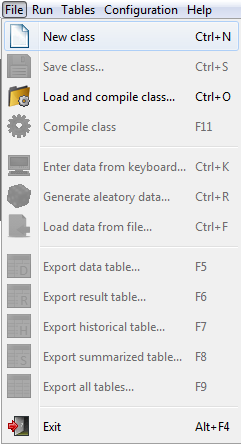

return
Load class
Load class from a file
Select from the menu bar.
Then select the class file you want to use, and click the "Open" button.
Note:
The class files are files .java.
Load new class
Select from the menu bar.

In the editor pane displays a java class template.
Save Class
Select from the menu bar.
Then enter the name of the class file you want to use, and press the "Save" button.
Nota:
La clase se guarda con la extensión .java.
Compile class
Select from the menu bar.
You will then see the result of the compilation.
If the compilation is correct:
If compilation errors:
September 16, 2016